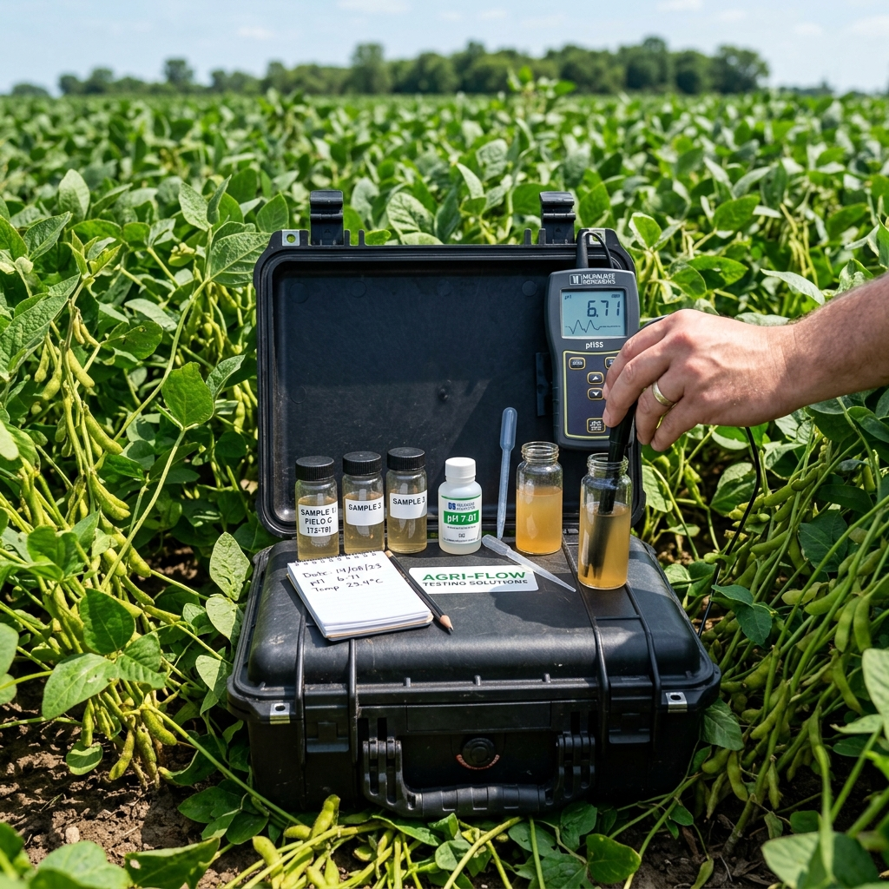
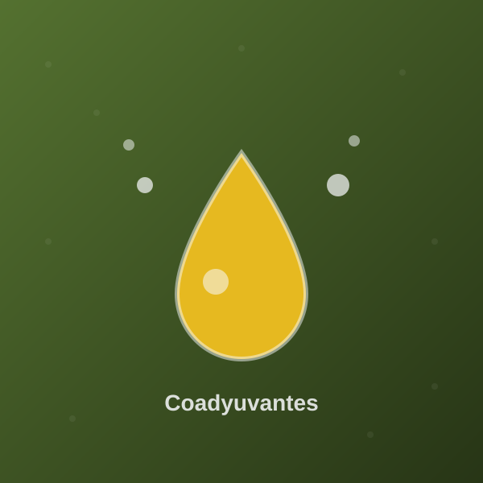
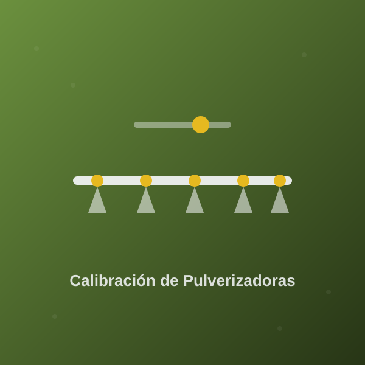

Información técnica, boletines MAC Info e informes de mercado actualizados.

Resumen de la jornada técnica sobre esquemas sanitarios y nutricionales biológicos bajo cubierta.

Análisis mensual del mercado internacional de granos según USDA y Bolsa de Chicago.

Nitrógeno, fósforo, azufre y zinc en las primeras etapas de macollaje.

Barbecho químico de invierno, orden de mezclado de herbicidas y coadyuvantes para aguas duras.

Contenido en preparación.

Contenido en preparación.

Contenido en preparación.

Contenido en preparación.